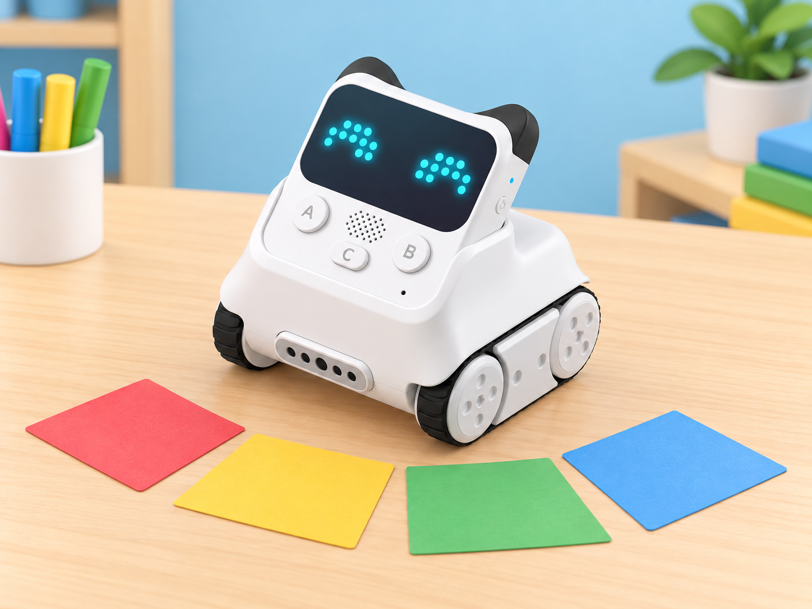

Una dansa robòtica per a la festa de l’escola
🏷️ Ritme, dansa i expressió
🌱 Situació, repte i intenció
L’objectiu no és fer que molts robots es moguen sincronitzats ni garantir una precisió musical professional. La proposta està pensada per a un Codey Rocky, que cada equip pot provar per torns. S’investiga com ordenar accions i pauses, què es pot repetir al programa i com canvia la dansa quan modifiquem un element.
🎯 Aprenentatges i vocabulari
pulsació i patrons rítmics; correspondència entre símbol, temps i acció; seqüenciació; ús de blocs de moviment, emoció, llum i espera; prova i depuració; creació cooperativa i comunicació d’una decisió artística.
🧰 Materials i preparació
Prepareu un Codey Rocky carregat, ordinador amb mBlock 5 i el cable USB adequat per a la dotació, una pista baixa i ampla amb vores lliures, targetes de quatre o huit pulsacions, fitxes de colors o pictogrames per a les accions, paper per a dissenyar la seqüència i instruments suaus opcionals. Comproveu la connexió i que els blocs d’acció, emoció i il·luminació siguen disponibles en la versió i el mode de programació del centre.
Makeblock descriu el mode Upload com una manera de carregar el programa al robot perquè puga funcionar després desconnectat; feu una prova prèvia amb la configuració real de l’aula.
Deixeu lliure el xassís, les rodes i els sensors: no enganxeu disfresses ni materials sobre el robot. Si l’alumnat vol crear una escenografia o un vestit per a una figura de paper, situeu-lo al costat de la pista. Acordeu una senyal de parada accessible abans de cada prova i manteniu el robot a velocitat baixa. No és necessari enregistrar cap vídeo ni veu; una demostració en directe, un guió visual o una fotografia sense persones compleix la mateixa funció.
📅 Seqüència didàctica
Escoltem, marquem i acordem un ritme (45 min)
Fase 1 · Activem i prediem
Escolteu una peça instrumental adequada o creeu un patró curt amb palmades, colps suaus sobre una taula o instruments d’aula. Si evoqueu tabal i dolçaina, descriviu el caràcter del ritme sense afirmar que una seqüència inventada és una peça tradicional concreta.
Fase 2 · Explorem i construïm
Marqueu quatre pulsacions regulars amb una targeta per temps. Proveu un patró senzill, com fort-suau-suau-fort, i deixeu que el grup propose una variació. Trieu fins a quatre accions que el robot puga representar: avanç curt, gir amb duració provada, expressió, indicador RGB o espera.
Fase 3 · Expliquem i registrem
Associeu cada acció a un pictograma, no sols a un color. Decidiu quina part del ritme representarà el robot i quina quedarà a càrrec de la percussió humana; anoteu la llegenda perquè una altra persona puga interpretar les targetes.
Fase 4 · Apliquem i millorem
Proveu una variació i reviseu si les targetes indiquen clarament el patró, la pulsació i les accions. Ajusteu la tira abans de programar si una instrucció resulta ambigua.
Fase 5 · Comprovem i reflexionem
Una altra parella reconstrueix el ritme amb les targetes.
Inventem i assagem els moviments (45 min)
Fase 1 · Activem i prediem
Representeu la coreografia amb una figura de paper sobre una pista dibuixada. Ordeneu els moviments i prediu on quedarà la figura al final.
Fase 2 · Explorem i construïm
Doneu a cada acció una duració segura i assumible. Si un gir no és previsible, proveu-lo a soles i ajusteu distància o temps abans d’incorporar-lo al patró. Ningú no posa mans o peus davant del robot mentre es mou.
Fase 3 · Expliquem i registrem
Assigneu rols: una persona porta el ritme, una altra assenyala la targeta que toca i una tercera observa el moviment. Registreu el guió temporal amb inici, accions i final, més una predicció sobre el punt que podria desajustar-se.
Fase 4 · Apliquem i millorem
Assageu a velocitat lenta amb un sol Codey Rocky i canvieu els rols en la prova següent. Si hi ha un desajust, identifiqueu si prové de pulsació, duració, moviment o pausa i canvieu un element cada vegada.
Fase 5 · Comprovem i reflexionem
Comproveu si el robot acaba a la posició prevista i expliqueu quina acció ocupa cada temps.
Programem expressions, moviments i llums (45 min)
Fase 1 · Activem i prediem
Connecteu Codey Rocky a mBlock 5, seleccioneu el dispositiu i llegiu el guió de blocs abans d’executar-lo. Predigueu l’ordre d’accions i assenyaleu quin bloc farà esperar el robot.
Fase 2 · Explorem i construïm
Comenceu amb una seqüència curta de dues accions. Useu blocs de moviment per als desplaçaments, Emotion per a l’expressió de pantalla i Lighting per a l’indicador RGB; intercaleu pauses temporitzades. Si el grup està preparat, repetiu la tornada amb una estructura de repetició disponible. No pressuposeu que el robot s’ajusta automàticament a la música.
Fase 3 · Expliquem i registrem
Feu una prova sense música i després marqueu el patró amb palmades. Compareu-lo amb el programa i registreu el resultat; comenteu que l’indicador RGB és un efecte visual, no una instrucció que haja de dependre només del color.
Fase 4 · Apliquem i millorem
Canvieu només un element —nombre de pulsacions, duració del gir o color de l’indicador— i compareu les dues versions. Confirmeu que el canvi no altera accidentalment la resta de la seqüència.
Fase 5 · Comprovem i reflexionem
Expliqueu quina instrucció produeix la pausa i quin canvi ha millorat el resultat.
Mostrem la dansa i expliquem com l’hem revisada (45 min)
Fase 1 · Activem i prediem
Prepareu una escena amb targetes o decorats de paper situats fora del trajecte. Trieu si acompanyareu el robot amb percussió corporal, instruments suaus o silenci i targetes visuals.
Fase 2 · Explorem i construïm
Executeu la coreografia en una pista ampla, amb el públic a distància segura i una persona responsable del botó d’aturada. No cal gravar-la; una demostració en directe o un guió visual compleix la mateixa funció.
Fase 3 · Expliquem i registrem
Presenteu el patró triat i el fragment que es repeteix. L’audiència pot reconstruir la seqüència amb targetes i indicar què ha entés.
Fase 4 · Apliquem i millorem
Useu el retorn per revisar una instrucció. Si el centre decideix enregistrar, seguiu les normes de privacitat i autoritzacions; també es pot documentar la revisió sense cap gravació.
Fase 5 · Comprovem i reflexionem
Tanqueu amb una decisió que mantindríeu i una que canviaríeu, i expliqueu quina prova ha motivat la revisió.
🧪 Evidències i avaluació
Recolliu la llegenda de símbols, el guió temporal, el programa o mapa de blocs i una nota de revisió. Observeu si l’alumnat:
- manté una pulsació comuna o explica quan ha canviat;
- ordena accions perquè una altra persona puga reconstruir-les;
- relaciona una pausa o repetició amb l’efecte que vol aconseguir;
- canvia una variable i compara el resultat amb la prova anterior;
- comunica una intenció artística amb paraules, símbols o demostració.
No es puntua la qualitat del ball ni l’execució musical individual. Una proposta amb dues accions ben explicades és vàlida si les decisions són visibles i revisables.
♿ Participació, accessibilitat i seguretat
Oferiu una versió sense música, amb vibració/gestos només si són confortables, o amb comptatge visual. Ningú no ha de ballar, cantar, parlar en públic ni ser enregistrat. Les targetes, el disseny de seqüència, la programació, l’observació i la presentació són rols equivalents. Useu pictogrames a més dels colors i deixeu que una persona dicte instruccions perquè una altra opere l’ordinador. Manteniu el robot dins d’una pista ampla, estable i sense obstacles alts; atureu-lo abans de recuperar-lo o ajustar peces.
🔗 Referents i adaptació
La proposta adapta Case 20: Codey Rocky dances, que combina blocs Emotion, Action i Lighting per crear moviments, expressions, efectes de llum i sons. Ací la classe escriu una coreografia amb un ritme propi, incorpora pauses, prova un fragment repetit i documenta la depuració. La guia de programació de Codey Rocky amb mBlock 5 diferencia els modes Live i Upload; comproveu la versió instal·lada i les opcions reals abans de la sessió.